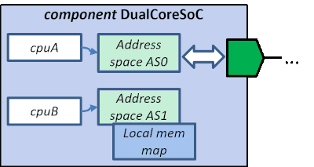

The cpus editor lists the programmable cores the component contains.
Each CPU has a mandatory name and optional textual description. Address space references specify the logical address space of the cpu. When a master interface of a component referencec the same address spaces, there's a link link between the programmable core and the interface.
Cpus editor provides a context menu (right mouse button) with the following options:
EXAMPLE. Example SoC has two CPUs. Both refer to an address
space which are both bound to a master interface. Consequently,
cpuA has access to the upper master interface and cpuB to the
lower one.
